Spectral Estimation Techniques: Correlogram, Blackman–Tukey, Windowed Periodogram, Bartlett, and Welch Methods
Windowed Periodogram
The windowed periodogram is a widely used technique for estimating the Power Spectral Density (PSD) of a signal. It enhances the classical periodogram by mitigating spectral leakage through the application of a windowing function. This technique is essential in signal processing for accurate frequency-domain analysis.
Power Spectral Density (PSD)
The PSD characterizes how the power of a signal is distributed across different frequency components. For a discrete-time signal, the PSD is defined as the Fourier Transform of the signal’s autocorrelation function:
Sx(f) = FT{Rx(τ)}
Here, Rx(τ)}is the autocorrelation function.
FT : Fourier Transform
Classical Periodogram
The periodogram is a non-parametric PSD estimation method based on the Discrete Fourier Transform (DFT):
Px(f) =
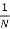
|X(f)|2Here:
- X(f): DFT of the signal x(n)
- N: Signal length
However, the classical periodogram suffers from spectral leakage due to abrupt truncation of the signal.
Windowing to Mitigate Spectral Leakage
Spectral leakage can be minimized by applying a window function to the signal before computing the DFT. The resulting PSD estimate is called the windowed periodogram:
Pw(f) =
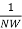
|Xw(f)|2Here:
- w(n): Window function
- W: Window normalization factor
Common Window Functions
- Rectangular Window: Equivalent to the classical periodogram.
w[n]=1, 0≤n≤N−1
w[n]=0, otherwise
Where, N is the window length
- Hamming Window: Reduces sidelobe amplitudes, improving frequency resolution.
w[n]=0.5(1−cos(
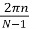
)), 0≤n≤N−1Where, N is the window length
- Hanning Window: Similar to Hamming but with less sidelobe attenuation.
w[n]=0.54 – 0.46cos(), 0≤n≤N−1
Where, N is the window length
- Blackman Window: Offers even greater sidelobe suppression but at the cost of wider main lobes.
w[n]=0.42 – 0.5(cos() + 0.08(cos(
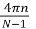
), 0≤n≤N−1Where, N is the window length
Implementation Steps
- Segment the Signal: Divide the signal into overlapping or non-overlapping segments of length N.
- Apply a Window Function: Multiply each segment by a window function w(n).
- Compute the DFT: Calculate the DFT of the windowed segments.
- Average the Periodograms: For overlapping segments, average the periodograms to reduce variance.
Properties of the Windowed Periodogram
- Bias: Windowing introduces bias in the PSD estimate as the window modifies the signal spectrum.
- Variance: Averaging periodograms (Welch method) reduces variance but decreases frequency resolution.
- Trade-Off: The choice of window affects the trade-off between spectral resolution and leakage suppression.
Applications
- Signal Processing: Analyzing frequency content of time-varying signals.
- Communications: Evaluating spectrum occupancy in wireless systems.
- Bioinformatics: Investigating periodicities in biological signals (e.g., EEG, ECG).
- Seismology: Characterizing seismic wave frequencies.
Correlogram
The Correlogram method is one of the simplest techniques for estimating the Power Spectral Density (PSD) of a signal. It is based on the Fourier Transform of the estimated autocorrelation function of the signal.
Power Spectral Density (PSD)
The PSD describes how the power of a signal is distributed over different frequency components. For a discrete-time signal, the PSD is computed as the Discrete-Time Fourier Transform (DTFT) of the autocorrelation function:
Sx(f) =
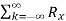
[k] e-j2π f kWhere Rx[k] is the autocorrelation function of the discrete-time signal.
Autocorrelation Function
The autocorrelation function Rx[k] measures the similarity between a signal and a time-shifted version of itself. For a discrete-time signal x[n], it is defined as:
Rx[k] =
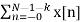
x[n+k]*Where k is the lag and N is the signal length.
Steps to Compute Correlogram
Estimate Autocorrelation: Compute the unbiased or biased estimate of the autocorrelation function of the signal.
Apply a Window: To reduce spectral leakage, apply a window function to the autocorrelation sequence.
Compute Fourier Transform: Perform the Fourier Transform of the windowed autocorrelation function to estimate the PSD.
Windowing in Correlogram
Windowing is essential to manage the trade-off between resolution and spectral leakage. Common windows include:
- Rectangular Window: No additional processing (equivalent to no window).
- Hamming Window: Reduces sidelobes effectively.
- Hanning Window: Provides smoother transitions at the edges.
Power Spectral Density Using N-point DFT
For a discrete-time signal sampled at N points, the Power Spectral Density (PSD) can be approximated using the magnitude squared of the Discrete Fourier Transform (DFT). The formula is given by:
Sx(fk) = |X[k]|2, k = 0, 1, …, N-1
Where:
- X[k]: The N-point DFT of the signal x[n].
- N: The total number of samples.
- Sx(fk): The estimated PSD at frequency fk.
This approach is commonly used in digital signal processing for spectral analysis of finite-length signals.
Advantages
- Simple to implement.
- Provides insight into the frequency-domain characteristics of signals.
Limitations
- Limited frequency resolution due to finite data length.
- Potential for spectral leakage if no windowing is applied.
Applications
- Analyzing stationary signals in time-series data.
- Frequency-domain analysis in communication systems.
- Studying periodic patterns in biological signals.
Bartlett Method
The Bartlett Method is a technique for estimating the Power Spectral Density (PSD) of a signal by dividing the signal into segments, computing the periodogram for each segment, and averaging the results. It provides a trade-off between bias and variance in spectral estimation.
Steps of the Bartlett Method
Divide the Signal: Segment the signal into M non-overlapping parts, each of length N.
Compute the Periodogram: For each segment, calculate the periodogram using the formula:
-
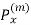
fk = |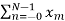
[n]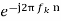
|2 - Where:
xm[n]: The m-th segment of the signal.
N: The length of each segment.
fk: The frequency index.
Averaging: Average the periodograms of all segments:
- Px(fk) =
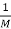
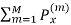
fk - Where M is the number of segments.
Advantages
- Reduces variance in PSD estimation compared to a single periodogram.
- Simple to implement.
Limitations
- Loss of frequency resolution due to segmenting the signal.
- Bias may remain if the signal is not stationary within segments.
Applications
- Analyzing frequency content in stationary signals.
- Estimating PSD in communication systems.
Blackman-Tukey Method
The Blackman-Tukey method is a spectral estimation technique that estimates the Power Spectral Density (PSD) of a signal using the autocorrelation function and a windowing technique. It is a non-parametric method that smoothens the spectral estimate to reduce variance and spectral leakage.
Steps of the Blackman-Tukey Algorithm
Compute the Autocorrelation Sequence:
- The autocorrelation Rx[k] of the signal \x[n] is calculated as:
Rx[k] = Σ x[n] x[n + k]
Apply a Window Function:
- A window w[k] is applied to the autocorrelation sequence to reduce noise and spectral leakage:
Rw[k] = Rx[k] w[k]
Perform Fourier Transform:
- The Fourier Transform of the windowed autocorrelation is computed to obtain the PSD:
Px(f) = FFT{ Rw[k]}
Mathematical Representation
The estimated Power Spectral Density (PSD) using the Blackman-Tukey method is given by:
Px(f) = FFT{ Rx[k] w[k] }
Here:
- Rx[k]: Autocorrelation function
- w[k] : Window function
- FFT : Fast Fourier Transform
Advantages
- Reduces spectral leakage through windowing.
- Smoothens the power spectral estimate, reducing variance.
- Flexibility in choosing different window functions (e.g., Hamming, Hanning, Blackman).
Disadvantages
- Lower frequency resolution due to windowing effects.
- Computationally expensive for large signals.
- Accuracy depends on the choice of window length and type.
Example Pseudo-Code
1. Compute the autocorrelation sequence of the signal.
2. Apply a window function (e.g., Blackman window) to the autocorrelation.
3. Perform FFT on the windowed autocorrelation sequence to obtain the PSD.
4. Plot the PSD for visualization.
Applications
- Analysis of radar and sonar signals.
- Audio and speech signal processing.
- Power spectral density estimation in communications systems.
Welch Method
The Welch Method is a widely used technique for estimating the Power Spectral Density (PSD) of a signal. It improves upon traditional periodogram methods by reducing variance through segmenting, windowing, and averaging the data.
Steps in Welch Method
Segment the Signal: Divide the signal into overlapping segments (typically 50% overlap).
Apply a Window Function: Apply a window (e.g., Hamming or Blackman) to each segment to reduce spectral leakage.
Compute the Periodogram: For each segment, compute the periodogram using the Fast Fourier Transform (FFT).
Average the Periodograms: Average the periodograms of all segments to obtain the final PSD estimate.
Mathematical Representation
The PSD estimate using Welch's method is given by:
Pxx(f) =
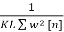
|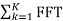
{ xx[n].w[n] }|2Where:
- K: Number of segments
- L: Length of each segment
- w[n]: Window function
- xk[n]: kth segment of the signal
Advantages
- Reduces variance by averaging multiple segments.
- Allows flexibility in segment length, overlap, and window choice.
- Minimizes spectral leakage with windowing.
Disadvantages
- Lower frequency resolution due to overlap and windowing.
- Increased computational cost for larger signals.
Manual Implementation Steps
If you want to implement the Welch method manually, follow these steps:
- Divide the signal into overlapping segments.
- Apply a window function to each segment.
- Compute the periodogram of each segment using FFT.
- Average the periodograms across all segments.